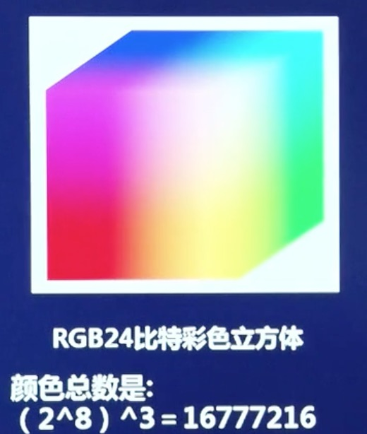
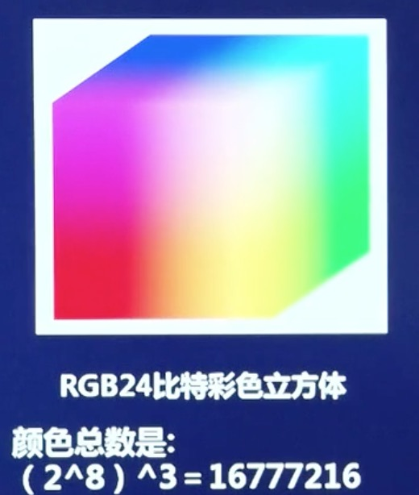
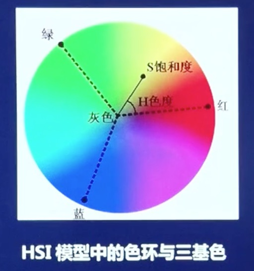

2.1 色度学基础 2.2 人的视觉特性 2.3 图像数字化 2.4 数字图像表示形式和特点
色度学基础
三基色原理
人眼的视网膜上存在大量能在适当亮度下分辨颜色的锥状细胞，它们分别对应红、绿、蓝三种颜色，即分别对红光、绿光、蓝光敏感。所谓三基色，是指自然界中的绝大部分色光可以用特殊选定的三种基本色光复合而成。由此，红、绿、蓝这三种颜色被称为三基色。
颜色模型
人眼视觉的感受颜色可用色调（hue）、饱和度（saturation）和亮度（brightness）来表示。 1. 色调：它表示颜色的种类，取决于主波长； 2. 饱和度：表示颜色浓淡的物理量，通常用混入白光量的比例来度量，所加白光量越多，饱和度越低。粉红色是由红色混入白色，所以饱和度就低； 3. 亮度（灰度）：人眼所感受到的颜色明暗程度的物理量。
各种表示颜色的方法，称为颜色模型。目前使用最多的是面向机器（如显示器、摄像机、打印机等）的RGB模型和面向颜色处理（也面向人眼视觉）的HSI（HSV）模型。 1. RGB模型：在三维直角坐标系中，用相互垂直的三个坐标轴代表R、G、B三个分量，并将R、G、B分别限定在[0,1]，则该单位正方体就代表颜色空间，其中的一个点就代表一种颜色。  在RGB空间中，用来描述每一像素的比特数就叫做像素的深度。如果每一个通道的单个像素都是8bit的话，那么三通道组成的图像就叫做24比特图像，也称为全彩图像。
 在RGB空间中，用来描述每一像素的比特数就叫做像素的深度。如果每一个通道的单个像素都是8bit的话，那么三通道组成的图像就叫做24比特图像，也称为全彩图像。
- HSI模型利用颜色的三个属性色调H(hue)、饱和度S(saturation)和亮度I(intensity)组成一个表示颜色的圆柱体。
RGB和HSI之间的模型转换
RGB转换到HSI:
\(I = \frac{1}{3}(R+G+B)\)
\(S = i-\frac{3}{(R+G+B)}[min(R,G,B)]\)
\(H = arccos \left\{\begin{array}{rcl} \frac{[(R-G)+(R-B)]/2}{[(R-G)^2]+(R-B)(G-B)} \end{array} \right \}\)
HSI转换到RGB:
①当\(0 \leq H \leq 120\)时，有
\(R=I[1+\frac{ScosH}{cos(60-H)}]\)
\(B=I(1-S)\)
\(G=3I-(B+R)\)
②当\(120 \leq H \leq 240\)时，有
\(R=I(1-S)\)
\(G=I[1+\frac{Scos(H-120)}{cos(180-H)}]\)
\(B=3I-(G+R)\)
③当\(240 \leq H \leq 360\)时，有
\(B=I[1+\frac{Scos(H-240)}{cos(300-H)}]\)
\(R=3I-(G+B)\)
\(G=I(1-S)\)
人眼的构造与机理
瞳孔：透明的角膜后是不透明的虹膜，虹膜中间的圆孔称为瞳孔，其直径可调节，控制进入人眼内光的通量（照相机光圈的作用）。
晶状体：瞳孔后是一扁球形弹性透明体，其曲率可调节，以改变焦距，使不同距离的图在视网膜上成像（照相机透镜的作用）。
视细胞：视网膜上集中了大量视细胞，分为两类： 锥状细胞：明视细胞，在强光下监测亮度和颜色。细胞个数6百万-7百万，可分为三种类型，分别对应可视光中的红绿蓝。每个锥状细胞连接一个视神经末梢，所以分辨率高，用来分辨细节和颜色； 杆（柱）状细胞：暗视细胞，在弱光下检测亮度，无色彩感觉。大约7千5百万到1亿5千万。多个杆状细胞连接着一个视神经末梢，所以分辨率低，仅分辨图的轮廓。比如月光下只能看到轮廓，颜色不明显。
人眼成像过程：光信号->视细胞->生理电信号->视神经->视神经中枢->大脑成像。
人的视觉特性
人的视觉模型
- 点光源的表示函数
- 点源可以用\(\delta\)函数表示，表示平面图像的二维\(\delta\)函数为： \(\left\{\begin{array}{rcl} \iint^{+\infty}_{-\infty} \delta(x,y)dxdy=1 \ \ \ \ \ \ \ \ \ \ \ \ \ \ \\ \delta(x,y)=\left\{\begin{array}{rcl} \infty,x=0,y=0 \\ 0 \ \ \ \ \ \ \ \ \ \ \ \ \ \ \ \ \ \ \ \ \ \ \ \end{array} \right. \end{array} \right.\)
则任意一幅图像可表示为：
\(f(x,y)=\iint^{+\infty}_{-\infty}f(\alpha,\beta)\delta(x-\alpha,y-\beta)d\alpha d\beta\)
图像数字化
- 均匀采样：将空间上连续的图像转为离散点；
- 采样间隔：采样点之间的距离。采样间隔越大，图像像素就越少，空间分辨率低，质量差。采样间隔越小，所得图像像素越多，空间分辨率高，图像质量好，但数据量大。
- 量化：将像素灰度转换为离散的整数值的过程。一副数字图像中不同灰度值的个数称为灰度级，用G表示。一般数字图像灰度级G为2的整数幂。量化等级越多，所得图像层次越丰富，灰度分辨率越高，质量越好，但数据量大；量化等级越少，图像层次欠丰富，灰度分辨率低，质量变差，会出现假轮廓现象，但数据量小。
- 非均匀采样：根据图像细节的丰富程度改变采样间距，细节丰富的地方，采样间距小，否则间距大。
- 非均匀量化：对图像层次少的区域采样间隔大的量化，而对图像层次丰富的区域采用间隔小的量化。
数字图像表示形式和特点
- 信息量大：一幅遥感图像N=1024，G=28=256，则容量=N2 K=8MB
- 占用频带较宽：与语音信息相比，图像信息占用的带宽要大几个数量级。处理的难度大，成本高。这就对对图像（频带）压缩提出了必须（很高）的要求。
- 像素间相关性大：同幅内相邻像素间具有相同（或相近）灰度的可能性；运动图像的相邻帧对应像素间相关性更大。所以，图像压缩的潜力很大。
- 视觉效果的主观性大：图像是图和像的有机结合，在处理中需要考虑人的视觉特点。
知识来源于：西安电子科技大学 现代图像分析视频课程 授课老师： 电子工程学院教授：李洁、高新波；副教授：张建龙、王颖、王秀美、王斌 公众号做知识记录：深度学习视觉 欢迎关注本公众号，获取接下来的课程知识